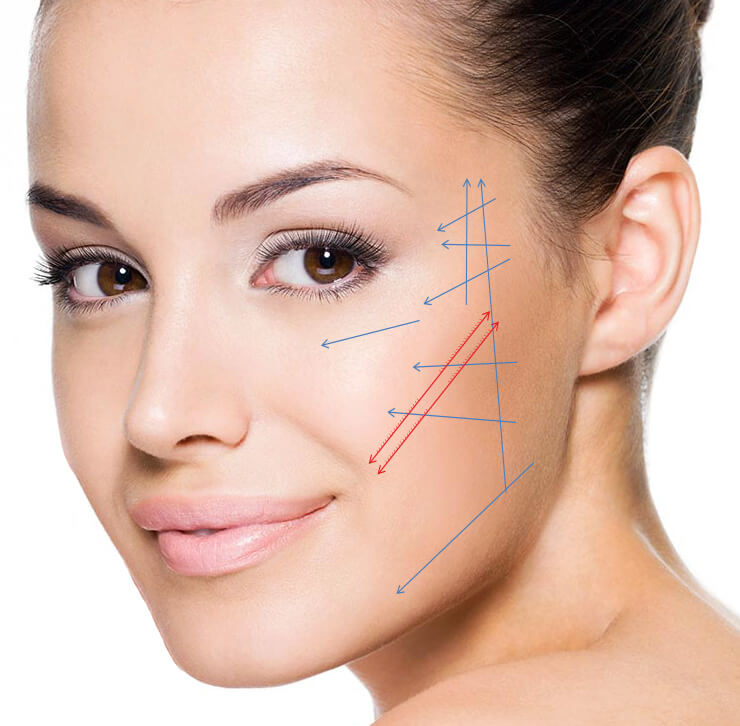

Hilos Tensores
Qué son los Hilos Tensores
- Sostienen y reposicionan la piel y los tejidos caídos
- Efecto Lifting: Se recupera la tensión de la piel
- Combate la flacidez
- No es cirugía
- Son hilos reafirmantes de PDO (Polidioxanona) que se depositan en el tejido subcutáneo
- Se trata de los mismo hilos de sutura reabsorbibles utilizados en cirugía
- Tratamiento rápido, seguro, eficaz
- Duración del procedimiento: 30 min aproximadamente
- Después del tratamiento el paciente continúa con su actividad de manera normal
- Duración del efecto: 1 - 2 años
- Los Hilos Tensores se reabsorben en 6 meses
Mecanismo de acción
Se trata de HILOS REABSORBIBLES que desencadenan, una reacción inflamatoria local, con una producción natural de COLÁGENO, que es el gran responsable del EFECTO TENSOR DE LOS TEJIDOS

Beneficios de los Hilos Tensores
- Evita la flacidez
- Reafirma la piel
- Rejuvenece el rostro
- Mejoran e inclusive, pueden eliminar las arrugas superficiales de la piel
- Elevación de las mejillas
- Mejora el perfil de la mandíbula
- Eleva las cejas
- Mejora las patas de gallo y el contorno de los ojos
- Mejora los surcos nasogenianos
OTRAS ZONAS
- Zona interna de brazos y muslos
- Glúteos
- Abdomen
- No hay una preparación previa por parte del paciente
- Los primeros resultados se visualizan inmediantamente
- Los Hilos Tensores pueden combinarse con otros tipos de tratamientos: Plasma Rico en Plaquetas, Rellenos (Botox, Ácido Hialurónico, etc)